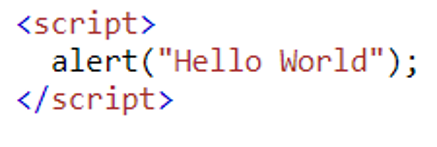
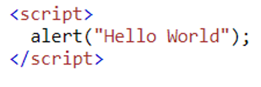

💠(JavaScript... What is it about?)
- ☑ JavaScript is a widely used scripting language on the internet.
- ☑ Recognized and works in all major browsers.
- ☑ Designed to add interactivity and functionality to the website.
🤔 (Types of JavaScript Output)
- "inner HTML"
The innerHTML property sets or returns the HTML content (inner HTML) of an element. It can be combined with the 'document.getElementById.' A message assigned in the HTML element span ID named 'message' will be displayed under the syntax image.

You're currently accessing an OPEN SOURCE INFORMATIONAL website.
- "Window Alert"
The alert() method displays an alert box with a specified message and an 'OK' button.

- "document.write"
The document. write() method writes a string of text to a document stream opened by document. open() . Note: Because document. write() writes to the document stream, calling document.

The innerHTML property sets or returns the HTML content (inner HTML) of an element. It can be combined with the 'document.getElementById.' A message assigned in the HTML element span ID named 'message' will be displayed under the syntax image.
You're currently accessing an OPEN SOURCE INFORMATIONAL website.
The alert() method displays an alert box with a specified message and an 'OK' button.
The document. write() method writes a string of text to a document stream opened by document. open() . Note: Because document. write() writes to the document stream, calling document.